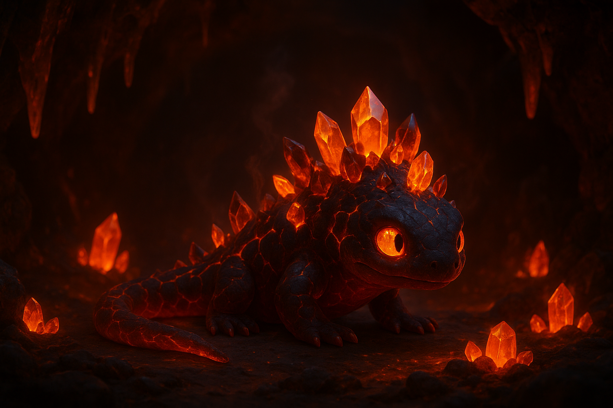

The Lava Salamander
In the depths of an ancient volcanic cavern, a young scientist accidentally awakens Ignis, a legendary fire salamander whose body burns with living magma and crystalline flames. Once a guardian of the natural world, Ignis has slept for centuries after humanity broke an ancient pact. Now awoken and enraged, his presence threatens to trigger catastrophic eruptions across the globe. The scientist must earn the trust of this magnificent but dangerous creature and help him find peace before his fury turns the world to ash. A visually stunning fantasy adventure about redemption, the power of nature, and learning to coexist with forces beyond our control.
Movie Rating: (9.7/10)
Cast Members
- Emma Stone as Meeko
- Serena Williams as Zumba
- Nick Jonas as Mravick(Meeko's Dad)
- Sarah Jeffrey as Navia(Meeko's Mum)